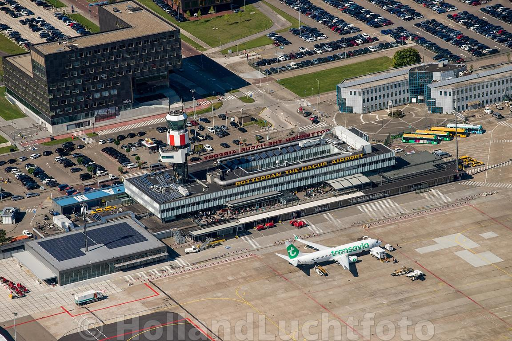
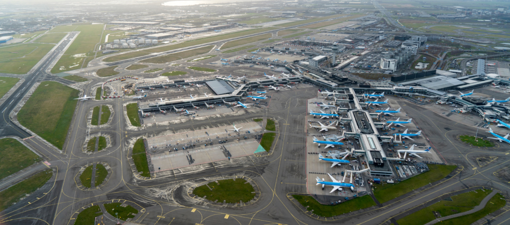

Eindhoven airport
Het vliegveld werd op 10 september 1932 ingericht als grasbaan met de naam Welschap. In de Tweede Wereldoorlog werd het vliegveld overgenomen door de Duitsers. Ze plaatsten daar bunkers en werd het vliegveld niet meer gebruikt. Na de oorlog werd Eindhoven airport weer omgebouwd tot een echte luchthaven met nieuwe startbanen. Het vliegveld is nu een van de grootste luchthaven van Nederland. In 2018 heeft Eindhoven airport ruim 8,2 miljoen reizigers gehad.
Rotterdam airport
Rotterdam airport wordt ook wel The Hague Airport. In 1956 werd het vliegveld aangelegd onder de naam Vliegveld Zestienhoven. Het vliegveld ligt ten noorden van Rotterdam en had in het jaar 2018 ongeveer 2 miljoen reizigers. Op dit luchthaven vliegen voornamelijk toestellen van Transavia naar Europese bestemming, zoals Spanje, Turkije, Italië, etc.
Schiphol
Luchthaven Schiphol is het grootste vliegveld van Nederland en het belangrijkste luchthaven van Europa. Schiphol heeft twee namen: Koninklijke Luchthaven Schiphol en Amsterdam Airport Schiphol. De luchthaven werd eerst gebruikt voor de militaire dienst en werd later pas een echte vliegveld voor reizigers. Schiphol had 71 miljoen reizigers in 2018. Luchtvaartmaatschappijen zoals KLM, Transavia, TUI Flyen Corendon gebruiken Schiphol als thuisbasis.
Bronnen